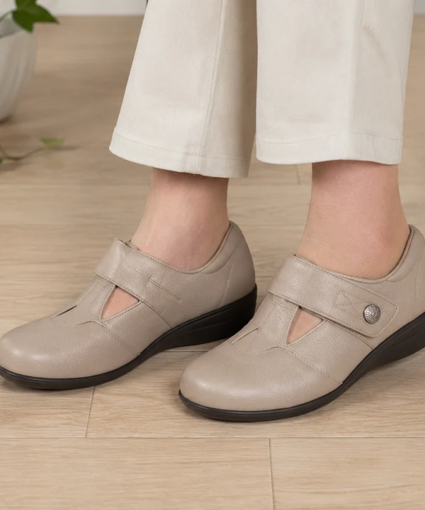

30代からはじめる靴選び
これからも自分の足で
歩くために。
足は年齢や生活の変化とともに少しずつ形が変わります。以前と同じサイズを買い続けるのではなく、今の足長・足幅・足囲を測り直し、靴の中で足が動かないか、実際に歩いて確かめます。
大人の靴選びを詳しく見る →足から健康に。
足の形、今の靴、歩く姿を確かめて、用途に合う靴とインソールをご提案します。 婦人靴、子ども靴、歩くための靴を、店頭で試してお選びいただけます。
外反母趾・タコ・巻き爪、歩くと疲れる、子どもの足。和歌山市の靴とインソール専門店です。

同じサイズでも、足の形は一人ひとり違います。まずお困りのことを伺い、足・靴・歩き方を確かめてから、暮らしに合う方法をご提案します。
年齢や生活の変化に合わせて、無理なく歩き続けるための靴選びをお手伝いします。
30代からはじめる靴選び
足は年齢や生活の変化とともに少しずつ形が変わります。以前と同じサイズを買い続けるのではなく、今の足長・足幅・足囲を測り直し、靴の中で足が動かないか、実際に歩いて確かめます。
大人の靴選びを詳しく見る →お子さまの足育
初めてのお子さまの靴選びが難しいのは当然です。足を測り、きちんと履かせ、歩く姿まで見ながら、今の足に合う靴を一緒に選びます。
子ども靴の選び方を見る →
歩きやすさだけを考える靴屋ではありません。足に合うことを確かめながら、色やデザイン、履いて行きたい場所も一緒に考えます。毎日履く靴だからこそ、鏡を見たときにうれしくなることも大切にしています。
パンプス、仕事靴、街歩きの靴まで。用途と足を見ながら、無理なく楽しめる一足を探します。
取扱商品と靴選びを見る →ご予約から提案まで、3つのステップで進みます。
公式LINEまたはお電話で、お困りのこととご希望日時をお知らせください。
足を計測し、今の靴と歩く姿を一緒に確認します。うまく説明できなくても大丈夫です。
できること・必要な費用をご説明し、ご納得いただいてから進めます。
内容によって変わるため、進める前に必ずご説明します。表示は税込の目安です。
わたしが相談やセミナーでお伝えしてきたことを、専門機関の公開情報と照らし合わせ、家庭でも確認できる形にまとめました。
Googleのクチコミよりご紹介します。
転倒して骨を折ったあと、足の計測をしていただき靴を合わせてもらいました。正しい足のサイズや靴の履き方を知ることができ、とても勉強になりました。おかげで、自分の足でしっかり歩ける、心地よい老後の準備がやっとできた気持ちになりました。五本指ソックスも初めて試しましたが、とても良かったです。
産後、市販のパンプスが合わなくなり悩んでいました。カウンセリングで足の計測や歩き方を見ていただき、正しいサイズを教えてもらいました。いつも適当に結んでいた靴紐も、正しい締め方を教わると驚くほど歩きやすくなりました。親指が痛くて履けなくなっていたセミオーダーのパンプスも、その場でインソールや靴の調整をしていただき、履き心地がかなり改善しました。
ご相談後のご感想は、Googleのクチコミでもご覧いただけます。
Googleのクチコミを見る ↗ ANDANTINO代表・シューフィッター
ANDANTINO代表・シューフィッター足と靴と健康協議会認定 シューフィッター ／ ANDANTINO オーナー
シューフィッターは、足と靴の専門資格です。ANDANTINOでは、認定シューフィッターの五十嵐洋子が、足の確認、靴選び、インソール、購入後の調整まで担当します。
自身も靴が合わず歩くのがつらかった経験から足と靴を学び、2007年に和歌山市で開業しました。
「何を選べばよいか分からない」からで大丈夫です。普段の靴と、気になっていることをそのままお持ちください。まずは公式LINEを友だち追加（登録だけでもOK）して、お困りのことを一言お送りください。
カウンセリングは6,600円〜、オーダーインソールは16,500円〜が目安です（料金詳細）。安さより、時間をかけた計測とご提案を大切にしています。
 WAKAYAMA · ANDANTINO
WAKAYAMA · ANDANTINO
一人ひとりのお話をゆっくり伺うため、前もってご予約をお願いしています。 営業日でも外出する場合がありますので、ご来店前にご連絡ください。